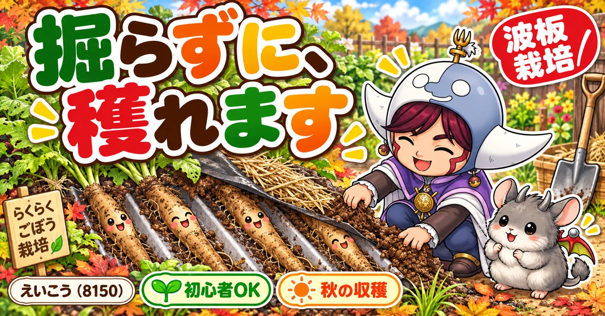
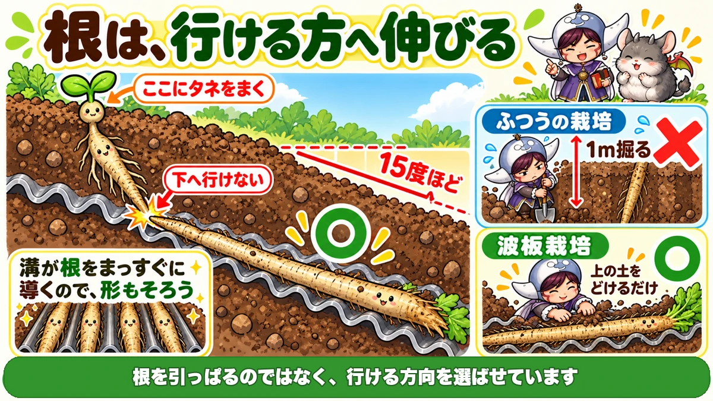
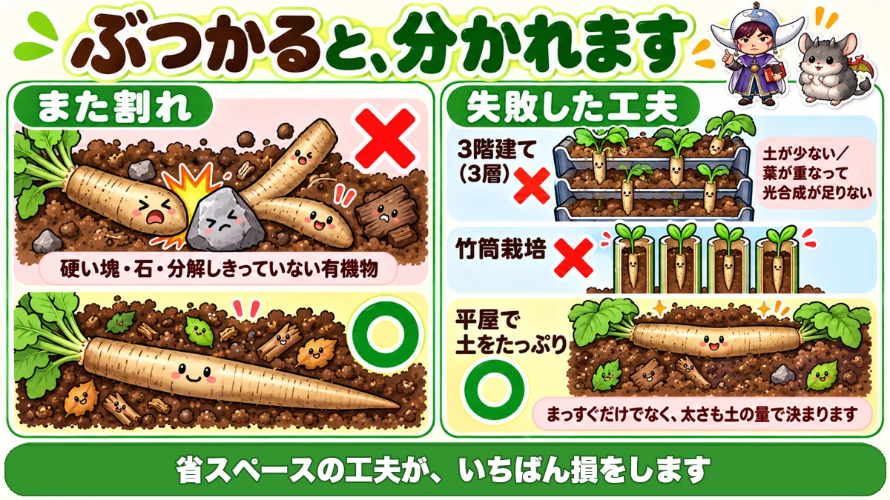
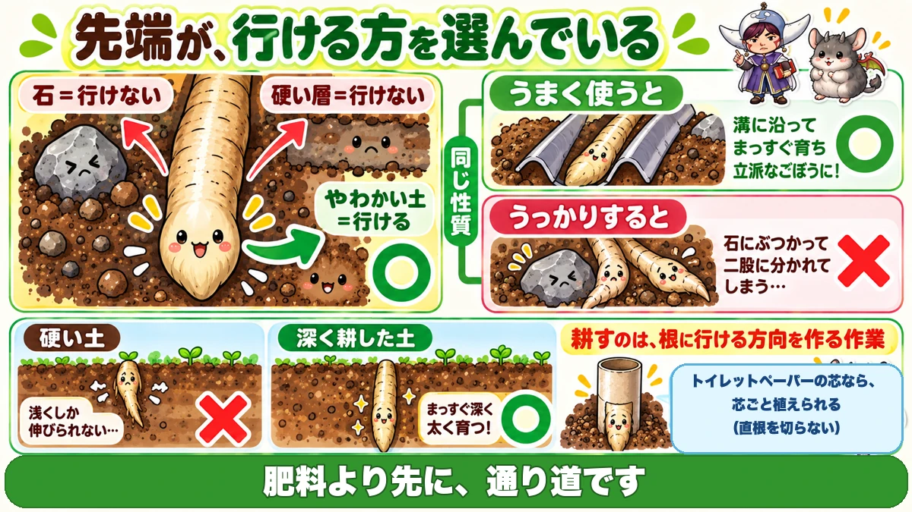

ごぼう栽培の調べもの帳｜短根・波板の選び方と発芽・又根・収穫の判断

どうも、8150（えいこう）です🌱 家庭菜園歴8年、理科の教員免許を持っていて、有機・無農薬で野菜を育てています。
📖 この記事の目次
この記事で分かること
- 初めてのごぼうは、掘り出せる長さの短根タイプから選ぶと計画を立てやすいです。
- 種は育てる場所へ直接まく方法を軸にし、浅い覆土と乾燥への対処を組み合わせます。
- 枝分かれした根は、石や残った根、硬い土の層、肥料の集中などから原因を探します。
- 波板は根の進む向きを変える仕掛けです。平置きと筒状では、土の量も収穫方法も違います。
- 葉が育つ空間と、地下の根が伸びる空間を両方確保します。高さだけで容器を選びません。
- 発芽までの日数、種の浸水、後作の選び方には異なる説明があります。条件をそろえて使い分けます。
ごぼうを育てたいけれど、「あの長い根、どうやって掘るん？」と気になりますよね。入口で決めたいのは、肥料の銘柄より『どの長さを育てて、どう取り出すか』です。収穫の出口を決めると、種選びも場所選びもつながります。
このページでは、普通の地植えを中心に、短根タイプと波板を使う方法を整理します。芽が見えないときは症状の章へ。道具を買う前なら作業の手順へ。複数の説明を見て迷ったら、両論を比べる章へ進んでください。
長根のごぼうと、短いサラダごぼうに同じ土の深さを当てはめると、準備がちぐはぐになります。波板を斜めに寝かせる方法と、丸めて立てる方法も別物です。みなさんが選んだ方法に関係する項目から読めば大丈夫です☺️
なお、ここでは数値のある栽培解説と、実際の収穫記録を分けています。準備時点の「こう育つはず」は、収穫まで成功した話とは扱いません。珍しい方法ほど、仕組みの面白さと、結果の確かさを分けて見ると選びやすくなります。
早見：ごぼうの育て方（ひと目で分かる数字）
種と場所を決めるための数字
- 種まきの時期：春にまくサラダごぼうの解説と、10月にまいて翌年5〜6月に収穫する解説があります。地域別の月を一律に並べられる材料ではないので、購入する種袋の適期を確認します。
- 春の保護：サラダごぼうの栽培動画では3月に保温する説明、4〜5月にトンネルを使う説明があります。別の栽培記録では、大型連休ごろまで遅霜を警戒しています。地域を越えて同じ終了日にしません。
- 短根の長さ：約30cmのサラダごぼうを勧める解説があります。短根という名前だけで長さを決めず、種袋にある収穫サイズを見ます。
- 長根の長さ：約1m、長いものでは120cmを超えるという説明があります。どの品種もそこまで伸びるという意味ではなく、土と収穫の準備を考える際の比較です。
- 種を並べる間隔：サラダごぼうの動画に約2cmずつのまき方があります。これは種まきの間隔で、収穫まで残す株の間隔ではありません。
- 一か所の種数：筒状栽培には4〜5粒、芯を使う育苗には5粒ほどという例があります。地植えの約2cm間隔と同じ配置に合体させません。
- 間引きの目安：サラダごぼうには葉が3〜4枚になった段階で約6cmの間隔へ整える説明があります。長根や容器栽培に共通の最終株間としては扱いません。
- うね幅：ごぼう専用の共通値は材料にありません。種をまく列、広がる葉、見回る通路を分けて計画します。別の根菜の幅をそのまま借りません。
- 元肥の時期：サラダごぼうでは種まきの約3週間前に肥料を入れる解説があります。ただし、肥料の種類と量を確定できる材料はないため、量の指定はしません。
- 追肥の時期と量：どの方式にも使える『何日後に何g』という数字はありません。上から施す筒の例と、植える前に準備する波板の例を分け、選んだ肥料の表示と栽培法を照らし合わせます。
- 発芽までの期間：約10日というサラダごぼうの説明があります。竹筒では3〜4週間ほどかかったという記録もありますが、記録中の言葉自体が揺れています。同じ条件の標準幅にはしません。
- 収穫までの期間：長根について約150日という栽培解説があります。短根には7月から収穫する例、秋まきには翌年5〜6月の例があり、すべてをごぼうの統一日数にはできません。
- 連作の間隔：ごぼうを作っていない期間を少なくとも3年間とする動画解説があります。材料内ではこの年数の説明は一つなので、すべての畑で安全を保証する値とは扱いません。
- 平置き波板の傾き：約15度にする実践例があります。根が土中の波板に当たり、溝に沿って育つ構造です。筒を立てる栽培の角度ではありません。
数字がたくさんありますが、最初に使うのは『選んだ種の長さ』『地域のまき時』『収穫方法』です。発芽や間引きの数値は、その方法を決めてから取り出してください。全部を一つの栽培法に押し込むと、なんか立派な予定表なのに実行しにくい、という状態になります。
数字を読み違えないための確認
- 約2cmは種を置く間隔、約6cmは特定の短根の間引き例、と分けた
- 約30cmは短根の紹介例、1m前後は長根の紹介例、と分けた
- 約150日は対応する長根の説明に限り、秋まきの暦と混ぜていない
- 約15度の波板は横に寝かせる方式で、立てた筒の話と分けた
- 約3週間前の施肥から、勝手に追肥の回数を作っていない
土の深さも読み違えやすいところです。一般の野菜の作土、根菜の耕し方、硬い層が見つかる深さは、同じ数字ではありません。20〜30cmに硬い層がある例は、『その深さまで耕せば長根も十分』という意味にはならないんですよね。
収穫したい根の長さに対して、地下へ伸ばすのか、波板に沿わせるのかを考えます。見えない地下を先に見積もるのが、ごぼうの段取りです。
作業の手順（時期の順）
種を買う前：収穫の出口から選ぶ
- 『普通の土から掘る』『斜めの波板から取り出す』のどちらにするかを決めます。
- 地植えなら、掘れる深さと作業の負担を考え、短根か長根かを選びます。
- 種袋でまき時と収穫サイズを読み、住んでいる地域に合うか確かめます。
- 収穫まで場所を使う期間を予定に入れ、途中で別の野菜へ場所を渡す計画になっていないか確認します。
短根は、長根と比べて深い掘り上げを減らせる選択です。「短い＝味を楽しめない」という話ではありません。初めてなら、まず根を無理なく取り出せることを優先すると続けやすいです。
長根を選ぶなら、長さだけに惹かれず、土を深く確認できる場所かを考えます。収穫の日に初めて石だらけの土に気づくと、根を守りながら掘る作業が難しくなります。種を買うときから、最後のスコップ仕事まで一組で考えておきましょう。
波板用に短い品種を選んだ収穫記録では、板には合っていても、収穫した根が期待より小さかったという振り返りがあります。扱いやすさと、食べたい大きさは別の希望です。みなさんが欲しいのは『大きな一本』か『掘りやすい数本』か、ここを先に決めると品種を選びやすくなります。
まく前：前作と地下の状態を調べる
- 前にごぼうを育てた年と、直前に育てた野菜を確認します。
- 土を掘り、石、古い根、大きな塊など、根の進路に残りそうなものを取り除きます。
- 表面だけ柔らかく、その下で急に掘りにくくなる層がないか見ます。
- 雨のあとに水が残る場所なら、水が抜ける状態を先に整えます。
- 土づくりで入れた肥料と日付を記録し、種まき直前に追加を重ねる予定になっていないか見直します。
ごぼうが太くなる部分は地下です。表面がきれいに見えても、下に残った石や硬い層は隠れています。小さな種をまく作業より、その前の土の確認に時間を使いたい野菜なんですよね。
石があったら必ず全部の根が枝分かれする、という単純な話にはしません。ただ、根の伸びる場所に異物が多い状態は避けたいです。土を動かすときに古い根や残った作物のかけらも拾い、根が通る場所を整えます。
施肥については、サラダごぼうに約3週間の準備期間を取る解説があります。土へ入れた成分が根の通り道の一か所に固まる配置は避ける、という説明もあります。ここから『すべての肥料を同じ量で全面に混ぜる』といった独自の処方は作りません。前作ですでに入れた分も含めて判断してください。
前作がジャガイモなら、すぐ根菜を続けない説明と、時間を置いてごぼうをまく説明が分かれています。この違いは後の章で整理します。日数を待っただけで土の不調が消えたと考えず、以前の根に異常がなかったかも確認します。
波板を選ぶ場合：平置きの構造を作る
- 平置きでは、土台に約15度の傾きをつける例を参考に、板を斜めに寝かせる構造を考えます。
- 波板を載せ、根が進む溝の上に土を用意します。
- 根を育てる土の量と、葉が広がる空間を確保します。
- 高い側の種まき位置から、根が板の溝に沿って進む配置を確認します。
- 板の先に伸びた根も取り出せるよう、収穫時に土をよける場所を見ておきます。

この図でつかみたいのは、根を地面の深いところへ伸ばす代わりに、斜めの板に沿わせる仕組みです。板を置けば、土や光の条件が要らなくなるわけではありません。土が少ないまま、板だけ長くしても準備は完成しないんです。
何段も積んで省スペースにする記録では、上段の土が少なく、葉の重なりも多かったという反省があります。その後、段を重ねず土を十分使う方法へ変更しています。初めて設計するなら、立体的な見た目より、各株に土と光が届くかを先に確かめます。
波板の材質や寸法、上に載せる土の厚さには、材料だけでは共通の指定を出せません。約15度の角度だけを見て、どんな板でも同じ結果になると考えないようにします。収穫したい根の長さと、使える面積を照らし合わせて選ぶ部分です。
丸めた波板を立てる筒状の方式は、ここで説明した平置きの手順とは分けます。筒内で根が絡んだ収穫記録があり、単に背を高くすればまっすぐ育つとは限りません。竹筒も同様に、土量不足の記録があります。
種まき：薄く覆い、種と土をなじませる
- 基本の入口は、収穫まで育てる場所へ種をまく直まきにします。
- 選んだ方法の配置に合わせて種を置きます。サラダごぼうのすじまき例なら、約2cmずつの間隔です。
- 種が土に覆われる程度の浅いまき方を使います。ここでは覆土を何mmと断定しません。
- 指などで土を押さえ、種と土が接する状態にします。
- まいた場所が乾き続けないように管理し、日付を記録します。
種まき前に一晩水に浸ける方法があります。一方、浸けずにまく方法もあります。選んだ種の表示を確認してどちらかを決め、浸水した種と乾いた種を同じ扱いで放置しないようにします。詳しい比較は『説明が分かれていること』で確認してください。
ごぼうは、発芽に光が関係する種として紹介されています。光を当てたいからと、乾いた地表へ裸のまま置けばよい、という意味にはなりません。薄い土の下で、種が水を得られる状態を作ります。浅くまくことと保湿をセットにするのがポイントです。
土を押さえるのは、深く埋め直すためではありません。種と土の間に大きなすき間を残さないための作業です。表面の土を押したあと、種がどこかへ流れていないかも見ます。深さと接触は別の項目、と考えると整理しやすいかなと思います。
発芽を待つ間：乾燥と寒さを分けて見る
- 朝や見回り時に、種まき位置の土が乾いていないか確認します。
- 水を補う場合は、浅くまいた種を流さないようにします。
- 冷え込む時期は、その地域の保護方法を選びます。
- 覆いを使っている場合は、芽が出ているか、覆いの下の状態も確かめます。
- 芽が見えないときは、まいた日、気温の経過、乾燥、覆土の状態を順に振り返ります。
サラダごぼうの解説では、発芽までの保湿に不織布を直接かける方法が出てきます。これは薄い覆土の乾きやすさに対応する方法の一つです。材料名だけで管理が済んだと思わず、その下の土を確認します。
寒さへの保護と乾燥への保護は、同じ覆いが使われても目的が違います。寒いから芽が遅いのか、土が乾いて種が水を吸えていないのかで、次に見る場所が変わります。「芽がないから水を増やす」の一本にせず、条件を分けます。
約10日という数字は見回りの目安です。別の竹筒記録の長い待ち時間を根拠に、地植えでも何週間も確認せず待つ、という使い方はしません。待つかまき直すかは、日数だけでなく種まき位置の状態から判断してください。
葉が増えたら：残す株の場所を整える
- サラダごぼうの説明では、葉が3〜4枚になったころを間引きの目安にします。
- 残す株を決め、約6cmの間隔へ整える例を参考にします。
- 混み合って根が絡んでいる場合は、無理に引き抜かず、不要な株をハサミで切る方法を使います。
- 間引いたあとに、残した株の根元の土が大きく動いていないか確認します。
- 新しい葉が出る様子と、株どうしの重なりを見て、その後の管理を続けます。
間引きは、種を減らす数合わせではありません。残した株が育つ場所を確保する作業です。一株だけ大きく見えても、その根元が隣の株と混み合っていれば、引き抜くときに土を動かしやすくなります。
波板筒には2〜3株を残した例もありますが、その数字はその筒の記録です。別の竹筒で最後に1本にした例と平均を取って、『容器は必ず2本』にはできません。品種、容器の広さ、土量を確認し、地植えの株間とも区別します。
育っている間：葉と土を見て管理する
- 葉が重なり続けていないか、日が当たる場所を見ます。
- 土が乾きすぎていないか、水がたまっていないかを確かめます。
- 葉裏や新しい葉を見て、アブラムシなどの虫がいないか確認します。
- 施肥した記録を見返し、追肥する方法なら、その方法と肥料表示に合わせます。
- 変化を日付と一緒に記録し、前の状態と比べます。
ごぼうの地上部だけを見て「肥料がもっと要るかな」と決める前に、葉が光を受ける空間と、根が使う土を確認します。段重ね栽培の反省では、土の少なさと葉の重なりが挙がっています。どちらも、肥料の回数だけで埋められる条件ではありません。
防虫ネットを勧める解説もあります。かけたあとも葉を観察し、虫が見つかれば発生場所を確かめます。ネットの有無と、いま葉に虫がいるかは別の確認です。
筒へ上から追肥する記録はありますが、どの成分を何回足せばよいかまで示したものではありません。土の中の根へ届く成分と、上に置いたものの量を同じと考えず、自己流で多量に追加するのは避けます。
収穫：根の進んだ向きを確かめて取り出す
- 種袋の収穫目安と、まいた日付を確認します。
- 地植えでは根の周囲の土を掘り、根を折らずに取り出せる状態へ近づけます。
- 平置き波板では、上の土をよけ、板の溝に沿った根の位置を確認します。
- 根が板の端を越えて地下へ伸びていないか見ます。
- 土に押さえられた部分を残したまま、葉や根元を勢いよく引っ張らないようにします。
波板は、根の位置を追いやすくするための工夫です。収穫記録には、板の先から下へ伸びた根を引いて、先が切れた例もあります。図どおりの位置に全部収まっているとは限らないんですよね。
短根でも、何の準備もなく抜けるとは考えません。長根に比べて掘る深さを減らせるのが利点です。『短いから雑に抜く』ではなく、『周囲を確かめやすい長さを選んだ』と考えると、収穫までの作業がつながります。
収穫後：保存する分と食べる分を分ける
- 掘り上げた根を見て、形と傷の有無を確認します。
- すぐ調理する分と、残しておく分を分けます。
- 栽培記録には土付きで保存する方法と、洗った根を早めに食べる方法があります。
- 保存中も状態を見て、傷みを放置しません。
- 育った形、掘りやすさ、前作を記録し、次の場所選びに使います。
冷蔵保存の期間は、材料の自動字幕では数字が読めないため、ここで何日と決めません。収穫した日に全量を洗うかは、すぐ食べる量を考えてから選びます。洗浄の手順と、長く置くための手順を同じにしないのが整理の入口です。
失敗の見分け方（症状→原因→やること）
まいた場所に芽が見えない
- 症状：予定していたころになっても、種まき位置に芽が見えません。
- 考えられる原因：覆土が深い、種の位置が乾いた、寒い時期で発芽が遅れているなどが候補です。竹筒では影になった場所で芽が見えなかった記録もあります。
- やること：日付を確認し、土の湿りと覆土、日当たりを調べます。水を追加する前に、すでに湿っていないか確かめます。
約10日という発芽の説明だけを頼りに、10日目で全部掘り返す必要はありません。ただ、芽がないのを見ずに待ち続けるのも避けたいです。『土は乾いていたか』『寒い日が続いたか』『深く埋めていないか』という、自分の作業で確認できる順に見ます。
翌年のためには、種まき日だけでなく、浸水したか、覆いを使ったかも残しておきます。同じ場所でまき直す場合にも、最初に起きた問題が分からなければ、同じ管理を繰り返してしまいます。
収穫した根が二股、三股になっている
- 症状：食べる太い根が、途中で大きく枝分かれしています。
- 考えられる原因：石や残った根などの異物、硬い土の層、落ち葉を重ねた層、肥料分の集中などが候補です。形だけでは一つに決まりません。
- やること：分かれ始めた位置と、その場所の土を見比べます。次にまく前に、異物や層の状態、肥料を入れた配置を見直します。

この図は地下の進路を考える助けとして使ってください。もし図中に未熟な肥料の注意があっても、『今回の又根はそれが原因』と即断しません。材料では、ごぼうへの肥料分の集中の注意と、肥料が分解するときの根への影響はありますが、未熟肥料だけを直接原因と断定する根拠はありません。
根の形から土の状態を想像するのは面白いところですが、一株の形だけで畑全体の診断まで進めません。同じ場所の複数の根が似た位置で分かれていたら、その深さを調べる手がかりになります。ばらばらの位置なら、個々の石や根の傷みなども考えます。これは調べる場所を絞る見方で、原因の確定ではありません。
根が途中で止まったように短い
- 症状：期待した長さまで伸びず、途中から太くなる形や、短く収まる形になっています。
- 考えられる原因：短根の品種を選んでいた、根の前に硬い層があった、容器の土量が限られていた、収穫の段階が違ったなどです。
- やること：まず種袋の長さを見直します。長根なのに同じ深さで止まっている場合は、その下の土を確認します。
短根のごぼうを長根の写真と比べて、失敗と決める必要はありません。波板に合う短い品種を使い、思ったより小さい収穫になった記録もあります。種を選んだ時点の予定と比べることが先です。
20〜30cm付近の硬い層を疑う解説はありますが、すべての畑にその深さで層があるわけではありません。数字を目標にしてそこだけ掘るのでなく、実際に掘りにくくなる位置を確かめます。
根が細く、ひものようになっている
- 症状：長さはあっても、食べる部分がほとんど太くなっていません。
- 考えられる原因：土の少ない竹筒や、土量の少ない多段波板で似た結果が記録されています。葉の重なりによる光の不足も、栽培の振り返りに挙がっています。
- やること：容器の高さだけでなく土の量を見ます。葉が他の株の下になっていないかも確認し、次回の構造を変える材料にします。
細い根を見て、すぐ追肥だけを増やすと、土の少なさも日陰も残ります。まず『根の使える土』『葉が受ける光』を分けて点検します。この二つを確認したうえで、施肥の記録を見直す順にしてください。
多段の上段が細く、下段が太かった記録は、その構造での結果です。『下に植えれば何でも太くなる』という法則にしません。土量と葉の重なりを改めたとき、株の様子が変わるかを観察するための手がかりです。
筒の中で根がぐにゃぐにゃに絡んだ
- 症状：根の上部は太くても、下で曲がったり、複数の根が絡んだりしています。
- 考えられる原因：筒内で根の伸びる場所が限られ、複数株の進路が重なった可能性があります。筒状波板の実収穫に、想定と違う絡まりの記録があります。
- やること：無理に引いてほどこうとせず、土と根の位置を確認します。次の栽培では、株数、容器の広さ、根の長さの組み合わせを再検討します。
まっすぐな筒の中だから、根もまっすぐになると思いたくなりますよね。ところが、容器の形と根の育ち方は一対一ではありません。平置き波板の成功イメージを、筒にそのまま移さないのが大切です。
抜く途中で根の先が切れた
- 症状：取り出した根の先端が途中で切れ、残りが土にあります。
- 考えられる原因：まだ土に押さえられた部分があった、波板の端から下へ伸びていたなどが候補です。
- やること：次の株を引く前に、根の続く位置を探します。板の終わりまでで作業を止めず、その先の地下も確認します。
波板栽培でも、端を越えた根は普通の地面へ進むことがあります。掘る深さを減らせる方法であって、全部の根を引っ張るだけで取り出せる保証ではありません。土をよける手間を惜しまないほうが、結果として扱いやすくなります。
葉に虫が集まっている
- 症状：葉裏や新しい葉に小さな虫が見え、葉の様子が変わっています。
- 考えられる原因：アブラムシなどの発生を確認します。虫の名前だけでなく、いる場所と数、葉への影響を見ます。
- やること：葉裏を調べ、見つけた虫へ対応します。防虫ネットを使う方法でも、内部を確認する作業は続けます。
材料では防虫ネットを勧める説明がありますが、あらゆる虫を同じ方法で抑えられるとは扱いません。根の形の異常と葉の虫を、すぐ同じ原因に結びつける必要もありません。地下と地上で、観察する場所を分けます。
根に異常があり、前作にも気になる症状があった
- 症状：根の形や状態に異常があり、以前育てた野菜にも根の不調がありました。
- 考えられる原因：土の硬さや過湿のほか、土の中の害虫の影響も候補です。材料には、ごぼうを含む根菜と線虫被害の関係を扱う説明があります。
- やること：前作と症状を記録し、同じ場所へ続けてまく予定を見直します。根の現物や写真を残し、必要なら地域の栽培相談で確認します。
この段階で病名を決めて薬剤へ進むのは避けます。材料の薬剤実演は、ごぼうの病気が確定し、効果まで検証された記録ではありません。対処の入口は、場所、前作、排水、根の現物をそろえることです。
説明が分かれていること
種を一晩浸けるか、そのまままくか
- Aという説明：サラダごぼうの栽培動画では、発芽しにくさに対応するため、まく前に一晩水に浸ける方法を勧めています。
- Bという説明：別の筒状栽培の動画では、発芽率が高いとして、芽出しをせずそのまま種をまいています。
- どう考えればよいか：同じ品種、同じ種の状態、同じ季節で比べた資料ではありません。浸水を一律に必須とも不要ともせず、使う種の表示を見ます。
ここで比べたいのは、種まき前の処理です。薄く覆う、土となじませる、乾かさないという種まき後の管理まで省ける話ではありません。浸けたから発芽が約束されるわけでも、そのまままいたから保湿が要らないわけでもないです。
記録に残すなら『浸水したか』『まいた日』『土の乾き方』『芽を見つけた日』を一組にします。結果だけで次回の方法を決めず、条件も一緒に残すと、自分の畑に合う判断へ近づけます。
発芽は約10日か、3〜4週間か
- Aという説明：サラダごぼうの動画には、通常約10日という目安があります。
- Bという説明：竹筒の栽培記録では、3週間か4週間近くか、という揺れのある発言があります。
- どう考えればよいか：同じ条件で日数が割れているというより、方式や環境の違う記録です。『10日〜4週間がごぼうの正常範囲』とはまとめません。
種をまいた位置の影や温度、保湿の状態を見てから日数を使います。芽が出なかった竹筒の記録を、一般の地植えの待機期間に変えると、見回りを始める時期までずれてしまいます。
短根なら土の準備は浅くてよいか
- Aという説明：サラダごぼうの土づくりには、約10cmという数字を含む自動字幕があります。ただし、言葉が崩れていて、深さの確定値としては採用できません。
- Bという説明：別の短根の紹介では約30cmの根を想定し、長根の紹介では1m前後の長さを扱っています。
- どう考えればよいか：土づくりの数字と根の長さは同じ項目ではありません。短根だからどんな浅い土でも育つとはせず、種袋の収穫サイズに合わせて場所を確認します。
根菜一般の耕す深さや、大根の実演の深さも、ごぼう専用の数字へ置き換えません。『30cmと書いてあった』と思ったときほど、何の作物の、どの作業の数字かを確認してください。
又根は石のせいか、肥料のせいか
- Aという説明：石、古い根、残った作物のかけらを取り除くことで、根の枝分かれを避ける説明があります。
- Bという説明：ごぼうにも使える根菜の施肥方法として、肥料分が集中した場所へ根が達するのを避ける説明があります。別に、落ち葉層と根の分岐を結びつける解説もあります。
- どう考えればよいか：候補は一つではありません。分岐位置の土、異物、層構造、肥料を入れた場所を見比べます。
これは『石派と肥料派のどちらが正しいか』という勝負ではないんですよね。地下で根の伸びに影響する条件が複数ある、という整理です。石を除いたから肥料を集中させてもよい、と逆向きに使わないようにします。
未熟な肥料についても、別作物の注意をそのままごぼうの又根の直接原因にしません。肥料の分解による根への影響と、出来上がった根が枝分かれした原因を分けて考えます。
直まきがよいか、芯の苗を植えてもよいか
- Aという説明：ごぼうは主な根が下へ伸びるタイプとして、苗作りより直まきを勧める栽培解説があります。
- Bという説明：トイレットペーパーの芯で育て、1本に間引いた苗を芯ごと波板へ植える実践記録があります。
- どう考えればよいか：一般的な入口としては直まきを選びます。芯の方法は、根をむき出しにして普通のポット苗を移す話と区別します。
芯での実践があるから、どの苗でも移植して同じ結果になるとは限りません。芯の材質や商品ごとの違い、分解までの期間を材料から指定することもできません。初めての種まきで、わざわざ移植の工程を増やさなくても大丈夫です。
波板なら簡単にまっすぐ育つか
- Aという説明：斜めの平置き波板では、根が溝に沿い、深い掘り上げを減らす方法が説明されています。
- Bという説明：多段では土量不足と葉の重なり、筒状では根の絡まり、竹筒では土の少なさによる細い根が記録されています。
- どう考えればよいか：『波板』『筒』という名前で成果を一括りにしません。土量、光、根の進路、取り出し方を、構造ごとに見ます。
計画段階の『まっすぐ育つはず』と、実際に土を外したあとの形は分けます。設置が簡単そうなこと、育っている葉が大きいこと、収穫物が望んだ形になることは、それぞれ別に確認する項目です。
ジャガイモのあとにごぼうをまいてよいか
- Aという説明：ジャガイモの後作では、大根やごぼうを連続して作らないよう勧める動画があります。必要なら土を30〜50cmまで入れ替えるという条件付きの対策も出ています。
- Bという説明：別の動画では、秋ジャガイモの収穫後に約1か月半の時間を取り、1月や2月初めまでの期間を経て、ごぼうなどをまく選択を紹介しています。
- どう考えればよいか：二つの解説で、土の状態や地域などの前提差ははっきりしません。待てば問題がなくなる、と一つの規則へまとめません。
土を入れ替える深さは、通常のごぼう栽培で毎回行う耕し方の数字ではありません。条件の重い対策を、初心者の標準手順にしないようにします。前作の根の状態が気になるなら、別の場所も候補にします。
オクラやナスのあとに根菜を避ける説明もあります。これらは前作と土中の害虫の懸念を含む話で、ごぼう単独の連作年数とは別です。『ごぼうを3年間作っていない』だけで、直前の野菜や土の履歴を見なくてよいとはなりません。
追肥は上からでよいか、植える前に済ませるか
- Aという説明：立てた筒では、上から肥料を施して下へ成分が移ることを想定する実践があります。
- Bという説明：平置き波板では植える前、サラダごぼうではまく前に肥料を準備する解説があります。
- どう考えればよいか：容器の向きと作業時期が違います。元肥の準備と追肥を同じ作業にせず、量や回数を足し合わせません。
上から施す形だけをまねて、肥料の種類や土量が異なるのに同じ効き方を期待するのは避けます。材料には、ごぼう専用の追肥量を確定する根拠がありません。大根の肥料量や、液肥の作り方を借りて埋めないようにします。
土付きで残すか、洗って冷蔵するか
- Aという説明：保存する根は土付きのまま土で保管する栽培記録があります。
- Bという説明：波板から収穫した根を洗い、早めに食べる記録もあります。冷蔵の話もありますが、保存日数は字幕が不鮮明です。
- どう考えればよいか：これは相反する推奨というより、食べる予定で分けた扱いです。洗う方法から、長期保存の日数まで推測しません。
保存日数を断定できないからこそ、収穫した分の状態を見ます。何日置けるかだけに頼るより、使う予定を決めて収穫後の作業を選ぶほうが、この材料では確実に言える範囲です。
よくある質問
初めてなら、短根と長根のどちらがよいですか
掘る作業を見通しやすい短根が入口になります。約30cmの短いごぼうを勧める解説があります。長根を選ぶなら、土の深い部分を確認でき、収穫で掘る場所も使えるかを先に見てください。
サラダごぼうなら、生で食べてよいですか
材料には生食できるとする紹介もありますが、すべての短根品種や収穫物へ一般化しません。このページでは栽培の選択として扱い、食べ方は購入した種の説明や、確かな調理情報で確認してください。
プランターの深さは何cm必要ですか
この材料では、プランターの共通寸法を指定できません。短根か長根か、収穫サイズと土量で条件が変わります。筒栽培の細い根の記録からも、高さだけを確保すれば十分とは言えません。
肥料袋で育てる手順はありますか
今回の材料には、袋の材質、容量、排水、袋からの収穫手順を直接示す情報がありません。波板や竹筒の手順を袋へ置き換えては書けないため、このページでは袋栽培の作り方を案内していません。
ごぼうの苗を買って植えてもよいですか
直まきを勧める解説を入口にしています。芯で育てた苗を芯ごと植える例はありますが、一般のポット苗へ同じ結果を保証するものではありません。苗の表示にある扱い方を確認してください。
種を水に浸け忘れたら、まき直しますか
浸けずにまく実践もあるので、その一点だけでまき直す必要はありません。覆土、種と土の接触、保湿を確認します。芽が見えない場合は、浸水の有無以外の条件も見てください。
光が要る種なら、土をかぶせなくてもよいですか
薄く覆い、種と土をなじませるまき方が材料にあります。光を意識することと、種を乾いた表面に置いたままにすることは別です。浅い位置で水分を保てる状態にします。
間引きは全部手で抜いてよいですか
混み合っている場合には、ハサミで不要な株を切る方法があります。強く抜いて残す株の根や土を動かさないためです。株数だけを見ず、根元がどれくらい近いかも見ます。
約6cmの株間を長根にも使えますか
約6cmは、材料にあるサラダごぼうの間引き例です。すべての長根品種の最終株間に使える数字ではありません。選んだ種の表示を優先し、まく間隔とも分けてください。
波板は水平に置いても同じですか
材料で説明されている平置きは、約15度の傾斜をつける例です。水平な配置と比較した収穫結果はないので、同じと断定できません。板の向きと、種を置く位置を一組で考えます。
狭い場所なら波板を何段も重ねるのがお得ですか
多段の記録には、土が少ない上段で細い根になった結果と、葉の重なりへの反省があります。株数を増やす前に、各段の土量と光を確認します。置ける数と、育てられる数は分けて考えたいです。
竹筒なら長根を省スペースで作れますか
方法の記録はありますが、土量が少なく細い根になった例もあります。背の高い容器が、そのまま十分な根の生育空間になるわけではありません。成功が確立した簡便法としては案内しません。
葉が大きいなら根も順調ですか
葉は観察の手がかりになりますが、地下の根の形まで分かるわけではありません。筒状波板では、収穫してみると根が曲がり絡んでいた記録があります。葉の状態と、土量や配置の確認を組み合わせます。
又根になったら、肥料を減らせば直りますか
すでに枝分かれした根を、一本へ戻す手順は材料にありません。石や層構造など、肥料以外の候補もあります。収穫した形と土を見比べ、次の栽培前の改善へ使います。
ごぼうのあとなら別の根菜を続けてよいですか
別の野菜だから問題がないとは決めません。材料には、ごぼうを含む根菜と土中の害虫を扱う説明があります。前作の根の状態を確認し、場所を替える選択も考えます。
連作を3年空ければ、病気の心配はなくなりますか
3年間という説明はありますが、病害虫をなくす保証ではありません。前作、排水、以前の被害も確認します。年数と、土の現在の状態の両方から場所を選んでください。
種袋の収穫日数が来たら、すぐ全部掘りますか
日数を見回りの目安にし、品種と育ち方を確認します。短根の夏収穫と長根の約150日、秋まきの翌春収穫を一つにしません。食べる予定と、根を取り出す作業の時間も考えます。
波板なら根を引くだけで収穫できますか
先に土をよけ、根がどこまで伸びたかを確認します。板の先から地面へ下りた根を引いて切れた記録があります。板の上に収まった部分と、板を越えた部分を分けて扱います。
冷蔵庫で何日保存できますか
材料の保存日数は自動字幕が崩れているため、確定値を出していません。土付きで保存する分と、洗って早めに使う分を分ける記録はあります。日数を推測せず、状態を見て使う予定を立てます。
学ぶ：ごぼうのしくみ🔬
根の向きと、根を伸ばせる場所は別
ごぼうの主な根は、下へ長く伸びるタイプです。だから、地植えで長根を育てると、収穫のときも地下の長い部分を掘る必要が出てきます。根の進む向きを変えられれば、掘る作業の形も変わる。波板の工夫はここにつながっています。
根が下へ向かう性質があっても、硬い板をそのまま貫いて進むとは限りません。平置き波板の解説では、板に当たった根が溝に沿って伸びます。根の生長が続くときに、周囲にどんな空間が残っているかが関わるという見方です。

『抵抗の少ない方』という表現は、板と土の関係をつかむための言い方です。根が畑全体を見て、最短の道を選んでいるわけではありません。板に当たる位置、溝、土の状態が、育ち方を変える条件になります。
この図から、どんな角度の板でも必ず同じ向きへ曲がる、とは読みません。材料にあるのは、斜めの板と土を組み合わせた栽培の説明です。板の外へ出た根が、その先で地下へ伸びた収穫記録もあります。進路を誘導する仕掛けと、根の全長を完全に制御する仕掛けは、同じではないんですよね。
枝分かれした位置には、地下の手がかりがある
地上の葉を見ただけでは、土のどこに石や硬い層があるかは分かりません。収穫した根は、地下で育った形が見える実物です。どの位置で短くなったか、どの位置から大きく分かれたかを見れば、確認する土の場所を絞れます。
たとえば、複数の根が似た深さで止まっているなら、その深さの土を見てみます。一株だけ違う方向へ分かれていたら、その株の周りに残った異物などを調べます。根の形は答えそのものではなく、次に観察する位置の手がかりです。
又根を考えるとき、主な太い根が大きく分かれることと、周りに細い根があることも分けます。細い根が見えたというだけで、すべてを栽培の失敗と決める必要はありません。期待した食べる部分がどこで、どう形を変えたかを見ると、土づくりの振り返りにつながります。
土量は、高さだけでは分からない
長い根を育てたいとき、容器も長くしたくなります。でも、細い筒を高くするだけでは、中に入る土の量は限られます。竹筒で細い根になった記録は、その点を考える材料です。
ここでは、筒の長さと太さを分けてみます。同じ高さでも、太さが違えば入る土の量は変わります。形の違う容器を比べるときは、外から見た高さだけでは、根が使える場所の広さを判断できないということです。
波板を何段も重ねる場合も、段数を増やせば育てる土が十分になるとは限りません。一段ごとの土が薄ければ、その段の根が使える場所は小さいままです。多段で上の根が細かった記録を読むときは、段の高さより、各段の土量へ目を向けます。
土は単に根を隠す場所ではありません。水や養分を得る場所でもあります。土の少なさを肥料の追加だけで補えると考えないのは、この働きがいくつも重なっているからです。
葉を重ねると、地下にも影響する
葉は光を受けて、光合成で糖などを作ります。その材料が、根を含む株の生長を支えます。食べたいのは地下のごぼうですが、地上の葉が受ける光も、育てる条件の一つです。
多段波板の振り返りには、葉が重なりすぎて光合成が不足した、という説明があります。根を育てる場所を立体的に増やしても、葉が同じ場所へ集まれば、影になる部分が出ます。地下の省スペースだけを考えると、地上の空間を忘れやすいんですよね。
ここで見るのは、葉の枚数だけではありません。他の株の下に隠れていないか、株を増やしたために光を受ける場所が減っていないかです。間引きと配置の見直しは、地下の根のためであると同時に、葉の働く場所を確保する作業にもつながります。
発芽の光と、葉が育つための光を分ける
ごぼうの種は、発芽に光が関わる種として扱われています。これは、まくときの覆土を浅くする理由です。芽が出たあとに葉が光合成をする話とは、段階が違います。
種まきの段階では、浅い位置で光の条件を保ちつつ、水を吸える状態にします。芽が出て葉が広がった段階では、葉どうしの影を考えます。どちらも『日当たり』と呼べますが、見たいものは種の位置と葉の位置で変わるんです。
薄く土をかけても、乾き続ければ発芽の条件は整いません。葉へ光が届いても、地下の土量が極端に少なければ別の制約が残ります。理科の言葉を一つ覚えるより、いまの株がどの段階にいて、どこを観察するかを決めるほうが、作業に結びつきます🔬
まとめ
ごぼうの計画は、『食べたい根の長さ』『根が伸びる場所』『収穫で取り出す方法』を合わせて考えます。初めてなら短根を選び、まず最後まで掘り上げられる形を作ると進めやすいです。
始める前は、次を確認してください。
- 種袋のまき時と収穫サイズを、自分の地域と場所に合わせた
- 前作と、ごぼうを育てた履歴を確認した
- 石や古い根、硬い土の層を見た
- 波板を使うなら、土量と葉が広がる場所を確保した
- 種まき日、浸水の有無、肥料を入れた日を記録する準備をした
育て始めて困ったときは、症状から見る場所を決めます。
- 芽がないなら、覆土、乾燥、寒さ、影を確認します。
- 根が枝分かれしていたら、その位置の異物や層、施肥した場所を見ます。
- 根が細いなら、追肥の前に、土量と葉の重なりを見直します。
- 収穫で切れたら、まだ土に残っている部分や、板の端を越えた根を確かめます。
浸水するか、前作のあとに何を育てるか、追肥をどう施すかには、条件の異なる説明があります。数字だけを寄せ集めるより、使う種と栽培の構造をそろえて考えてください。
今日の一歩は、買おうとしている種の『根の長さ』と、畑で『掘れる場所』を見比べることです。まだ波板を買わなくても、ここは始められます。食べるときの長さだけでなく、育てて取り出すところまで想像できると、ごぼうの段取りがぐっと分かりやすくなるかなと思います☺️
くわ
深く耕すかどうかで、ごぼうの出来が決まります。短い品種なら家庭菜園でもいけます。
![[商品価格に関しましては、リンクが作成された時点と現時点で情報が変更されている場合がございます。]](https://hbb.afl.rakuten.co.jp/hgb/56d752c3.3ce6fd3b.56d752c4.f8896826/?me_id=1209220&item_id=10002030&pc=https%3A%2F%2Fthumbnail.image.rakuten.co.jp%2F%400_mall%2Fhonmamon-r%2Fcabinet%2Fimg3%2Fw4580149745643.jpg%3F_ex%3D240x240&s=240x240&t=picttext "[商品価格に関しましては、リンクが作成された時点と現時点で情報が変更されている場合がございます。]")

もみ殻くん炭
土をやわらかく保ちます。硬いと又根になります。
![[商品価格に関しましては、リンクが作成された時点と現時点で情報が変更されている場合がございます。]](https://hbb.afl.rakuten.co.jp/hgb/56bc30bc.01c5b89d.56bc30bd.ee310357/?me_id=1231595&item_id=10000412&pc=https%3A%2F%2Fthumbnail.image.rakuten.co.jp%2F%400_mall%2Fplanto-iwa%2Fcabinet%2F2707.jpg%3F_ex%3D240x240&s=240x240&t=picttext "[商品価格に関しましては、リンクが作成された時点と現時点で情報が変更されている場合がございます。]")
米袋
袋栽培という手もあります。深く掘らずに長いごぼうが穫れます。
![[商品価格に関しましては、リンクが作成された時点と現時点で情報が変更されている場合がございます。]](https://hbb.afl.rakuten.co.jp/hgb/56bc3119.f1f4196c.56bc311a.c9ac6e4e/?me_id=1215024&item_id=10001843&pc=https%3A%2F%2Fthumbnail.image.rakuten.co.jp%2F%400_mall%2Fkminori%2Fcabinet%2Fhozai%2Fimg57520728.jpg%3F_ex%3D240x240&s=240x240&t=picttext "[商品価格に関しましては、リンクが作成された時点と現時点で情報が変更されている場合がございます。]")